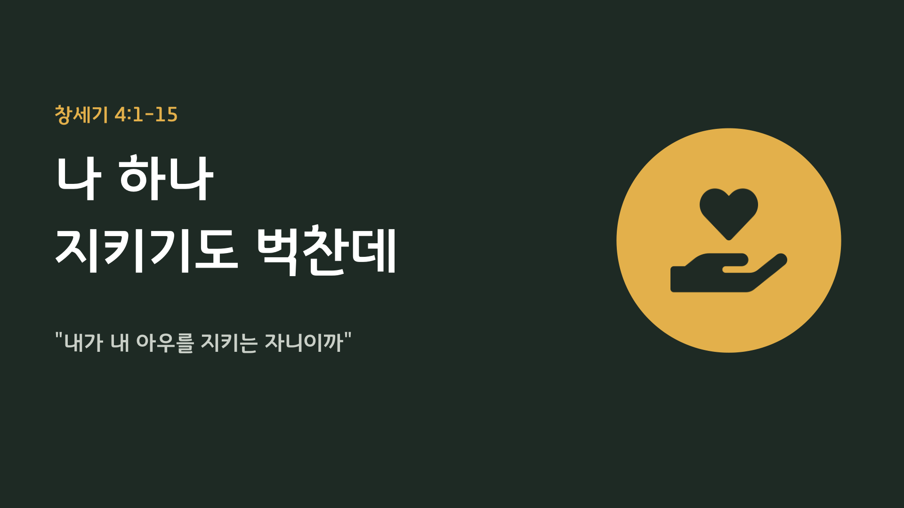

2026.09.27 주일 설교 묵상
나 하나 지키기도 벅찬데
자기를 지키려다 모든 것을 잃은 가인 앞에서, 나를 지키시는 하나님께 맡기는 법을 하루씩 배우는 일주일
주일 설교 다시보기
설교 영상은 편집이 끝나는 대로 추가됩니다.
본문: 창세기 4:1-15 (개역개정) · 설교자: 황성현 목사
가인은 자기를 지키려다 동생을 잃었고, 결국 땅도 하나님의 얼굴도 잃었습니다. 우리는 우리 자신을 끝까지 지킬 수 없습니다. 그러나 우리를 지키시는 이는 졸지도 않으십니다. 먼저 그 은혜를 받고, 그 손을 형제에게 내미는 한 주가 되기를 축복합니다.
가인은 자기를 지키려다 동생을 잃었고, 결국 땅도 하나님의 얼굴도 잃었습니다. 우리는 우리 자신을 끝까지 지킬 수 없습니다. 그러나 우리를 지키시는 이는 졸지도 않으십니다. 먼저 그 은혜를 받고, 그 손을 형제에게 내미는 한 주가 되기를 축복합니다.
주일 설교 슬라이드
1 / 31

좌우 화살표를 눌러 슬라이드를 넘겨보세요.
매일 이렇게 새로워지세요
- 결과 대신 하나님을 신뢰하기: 원하는 결과가 보장되지 않아도, "그렇게 하지 아니하실지라도" 하나님만 의지하는 마음으로 결정합니다.
- 지적받을 때 돌아서기: 잘못을 지적받으면 핑계 대신 곧바로 인정하고 돌이킵니다.
- 내 책임이 아니라는 선 지우기: 상관없어 보이는 사람 곁에도 멈춰 서서 돌봅니다.
- 받은 은혜를 흘려보내기: 내가 지킴받고 용서받았다는 사실을 기억하며, 그 은혜를 옆 사람에게 건넵니다.
요일별 묵상 여정
월요일
제목
성경구절